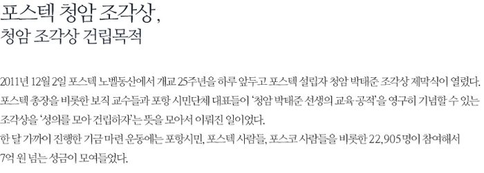

Wu Weishan, one of the best sculptors in the world and the director of the art academy at Nanjing University in China, made his bust and full-length portrait sculpture, respectively. The full-length sculpture was installed at the Nobel Garden and the bust inside the TJ Park Building of Academy and Information. The sculptor deeply understood the spirit of TJ Park given that he attempted to talk with him by reading the Chinese translation of his biography "TJ Park." He expressed hope that the young generation would learn his spirit, saying that the full-length portrait, composed and full of energy and generosity, reflected his admiration for TJ Park. Wu, also a famous calligrapher, wrote the "Giant Iron Man" and "Great Educator" in Chinese characters on the pedestal of the full-length figure. This eulogy is the essence of his life because it shows the result of Park's lifelong push to serve the nation with steelmaking and education, the two pillars of his life. On the left and right side of his sculpture are the copper plates filled with the names of donors. They look as if to guard him. The words for the monument erection are written on the back side of the pedestal as follows:
'Short Life for Eternal Fatherland.' Following the compass of this faith, TJ Park found his way and realized the mission of serving the country with steelmaking and education. He led efforts to modernize the nation by establishing POSCO and developing it into the best steel company with no previous experience in steelmaking ever. He established 14 schools ranging from kindergarten to high school, producing countless talented people for the nation. He became a beacon of light for this country's education and opened up new horizons by founding and growing POSTECH, the first research-focused university in Korea, into one of the top universities in the world. We, POSTECH and Pohang citizens, are honored to have him in the form of a full-length portrait sculpture in this Nobel Garden to commemorate and hold aloft his noble spirit and stellar achievements on the occasion of the 25th anniversary of POSTECH.
